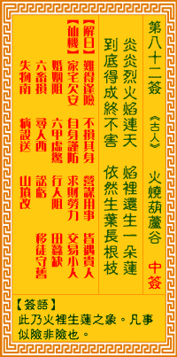

观音灵签第八十二签 【火烧葫芦谷】 |
 | |||
炎炎烈火焰烧天 焰里还生一朵莲 到底永成根不坏，依然生叶色新鲜 |
||||
| 【吉凶】 | 中中签 | 【宫位】 | 未宫 | |
| 【签语】 | 此卦火里生莲之象，凡事似险非险也。 | |||
| 【解曰】 | 虽然逢险 不损其身 营谋用事 皆遇贵人 | |||
| 【仙机】 | 此签家宅欠安，自身谨防，求财劳力，交易小人，婚姻阻，六甲虚惊，行人阻，田蚕缺，六畜损，寻人西，讼亏，移徙守旧，失物南，病 殁送，山坟改。 | |||
| 【详解】 | 火势凶猛，烈焰冲天，但莲花不受影响，依然在其中滋长;直到最后也并没有被折损，仍然枝繁叶茂，色彩鲜艳。 虽是危险，不伤其身，营谋用事，皆得贵人。此签火中生莲之象，凡事先难后易。 本签者。火中生莲之象。凡事先难后易者。目下时运未济。千万不可逞英豪。图意外之财。却反而损失不赀。所幸到底永成根不坏。依然枝叶色新鲜。尔之命也。 可因命大。遇险而不危。易言之。虽是危险不伤其身营谋用事皆得贵人。 此签有”因人而异”之意。意味当事人，不要太过执着。当我们在做一件事或向别人表达某些观点时，会发现有人能理解、有人却不能。此时也许会懊恼：为什么 同样一件事、说的是同样的话，反应结果却是两极?其实每个人都有每个人本身的个性、想法与特质，包括自己也是。硬要把自己的想法加诸在别人身上是行不通 的，常常只会造成反效果。何不试着多花一点时间，去了解别人的观点与性质差异。知道对方的喜恶之后，才能进一步沟通，也可以避免误触对方的禁忌。做起事 来，一定更加事半功倍。 | |||
| 【典故】 | 刘备和周瑜联合攻打曹操，孔明设七星台祭东风，助周瑜火烧赤壁，曹军被烧得狼狈而逃，曹操也带着一支残败军队逃亡。孔明派大将在 各处埋伏捉拿曹操。他派张飞去葫芦谷，不久，曹操和兵士到了葫芦谷口，人马困顿，坐下来休息烧饭。曹操在马上大笑孔明智谋不足，突然张飞杀到，山谷四处起火，曹操军队 挣扎一番，在火中狼狈而逃，走华荣道。三国故事 | |||